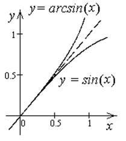

13.1.5. Непрерывность обратной функции
Если:
1)  – строго монотонная, непрерывная
на
– строго монотонная, непрерывная
на  ,
,
– строго монотонная, непрерывная
на ,2)  , то – строго монотонная, непрерывная на
, то – строго монотонная, непрерывная на  .
.
, то – строго монотонная, непрерывная на . , на – строго монотонна и непрерывна
, на – строго монотонна и непрерывна  имеет строго монотонную и
непрерывную обратную функцию на
имеет строго монотонную и
непрерывную обратную функцию на  .
.После переобозначения .
